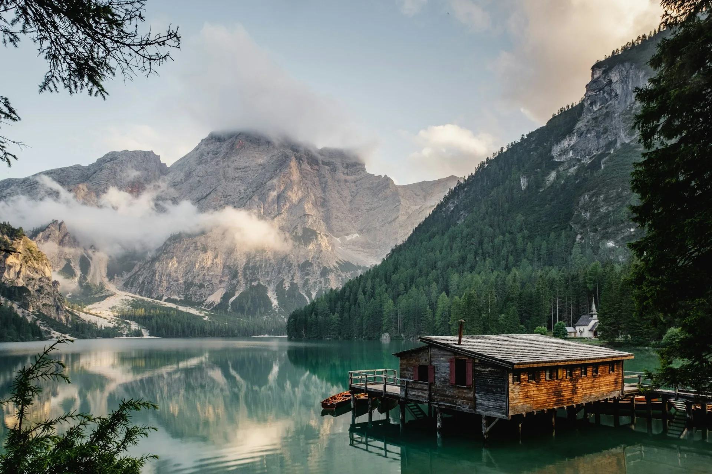

Домики у реки
Семь небольших домиков вдоль берега. Выберите расположение, которое вам ближе.

БЛИЖЕ К ПРИРОДЕ. БЛИЖЕ К СЕБЕ.
Загородный отдых среди природы
ВАШ МАЛЕНЬКИЙ ПОБЕГ ИЗ ГОРОДА
Оставить дела на потом. Вдохнуть поглубже. Провести время с теми, кто рядом.
«Золотая осень» — проект загородного отдыха с домиками у реки, банями и беседками. Познакомьтесь с территорией и найдите своё место на карте.
Знакомство начинается здесьИССЛЕДУЙТЕ ТЕРРИТОРИЮ
Выберите домик, баню или беседку прямо на карте. Посмотрите расположение и узнайте подробности.
Карта основана на предоставленном генплане. Изображения объектов — визуализация; фактический вид и готовность могут отличаться.
На телефоне откройте карту на весь экран: увеличивайте двумя пальцами и перемещайте одним.
ОТДЫХ В ВАШЕМ РИТМЕ
Семь небольших домиков вдоль берега. Выберите расположение, которое вам ближе.
Выразительная архитектура и собственное место в верхней части территории.
Для тёплых встреч и неспешных разговоров. Две бани и три беседки на генплане.
ДО ВСТРЕЧИ НА ПРИРОДЕ
Выберите место на карте. Даты, стоимость и детали
можно будет уточнить у администрации.
Контакты базы готовятся к публикации.